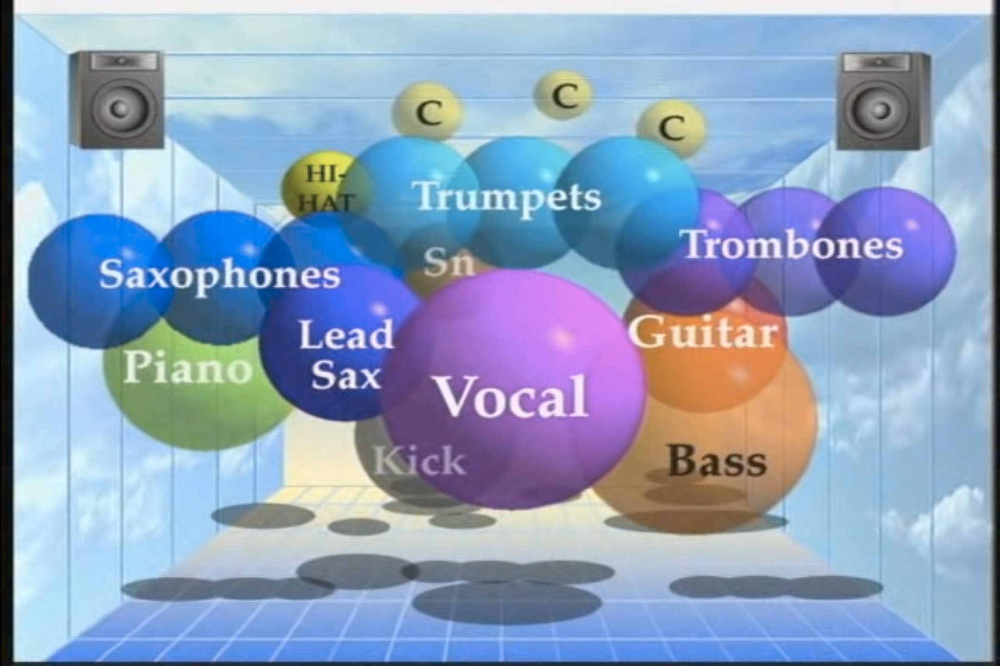

Audio Mixing: The Basic Concepts & Workflows
Note
- Table of Contents:
Introduction:
This document will be short and sweet. It is designed to give/remind you of the basic concepts and workflows of mixing without being so dense that you never get to do any actual mixing.
Resources:
Here are the resources that you may find useful while reviewing this document.
Mixing Example Files - Let’s Go to the Movies.zip
Mix Examples Files - Mello Is As Yello Does.zip
🌊 Billie Eilish - Ocean Eyes 👀 👈 Email me for the password to download this if you are one of my CCC Students
🏥 Chuck Sutton - Patience 👈 Email me for the password to download this if you are one of my CCC Students
Additional Multi-track Recording for practicing mixing can be downloaded from here.
Basic Concept
Mixing is all about considering and controlling (where needed) how all the sounds of your creation fit into the three-dimensional world of sound.

The Goal of Mixing
There can be many goals of mixing ranging from functional to artistic.
But perhaps a more useful spectrum to organize the goal of your particular mix would be between creating clarity or creating ambiguity. In other words, do all the elements of your mix sound distinct, or is it difficult to differentiate one sound from another?
In the early stages of masting the art of mixing, I would encourage you to strive for creating clarity within your practice mixes. Once you are confident in your ability to achieve clarity, it becomes much easier to then take into account an artistic goal you might be trying to accomplish through the way you are mixing a particular project.
The Three Dimension of Sound
I like to conceptualize, or approach every mix by considering every sound from three dimensions. The Three Dimension of Sound are:
- Frequency (Tool = EQ)
- Depth (Tool = Reverb)
- Stereo Field (Tool = Pan)
Note
Volume
Never forget about the importance of a sounds volume! Getting the balance right for all your sounds is both the starting point for every mixing session and the most important attribute to achieving a great sounding mix.
Volume, or a sound’s amplitude, is a fundamental attribute of sound that is essential to consider from the prospective of each dimension.
Volume in the Dimension of Frequency (EQ)
When thinking in the dimension of frequency we should be thinking about how loud a sound is across the frequency spectrum (low to high frequencies).
Volume in the Dimension of Depth (Reverb)
In the Depth Dimension we should be thinking about how loud is the reverb of a particular sound in relationship to how loud the dry (non-reverberated), or original sound is
Volume in the Stereo Field (Pan)
Finally, when thinking in the Dimension of Pan we should be thinking about how loud the sound on either the left or the right speaker/headphone.
Time
While we will often talk about music and mixing as if time does not exist, time almost always exist in a mix and can either make our job as mixing engineer easier or infinitely more challenging.
As creators, we can use time to create clarity between two sounds that otherwise share the same three-dimensional space. For example, a kick drum and a sub bass often both occupy the same sets of frequencies, sound relatively close to the listener in terms of depth, and sound from the center of the Stereo Image. So a composer/producer could choose to stagger these two element, rather than having these two elements move in rhythmic unison; perhaps with the kick drum sounding on the beat and the sub bass sounding in between the beats.
If the creator of the track has chosen to synchronize similar sounds in time, then we have to differentiate those sounds by creating contrast between them in at least one of the three dimensions.
Note
Dimension 1: Frequency
Every sound occupies a certain range of frequencies. EQ’s (graphic equalizers) allow you to shape a sounds frequencies like carving a statue from a block of granite.
When using an EQ to mix, you should almost always use it to reduce or completely remove certain frequencies.
When thinking through your mix from the perspective or frequency, start by getting to know the range of frequencies that each and every sound occupies.
Note
Once you have a good idea of the frequency space each sound occupies, consider what sounds share similar spaces in the frequency dimension, and which sounds stand apart.
Then use an EQ on every single sound to control how everything fits together.
Note
Note
Dimension 2: Depth
We can create depth within our mixes by appling reverb to some or all of the sounds.
Note
A “dry” sound that has little to no reverb will appear closer to the listener.
A “wet” sound that is treated almost entirely with reverb will appear further away from the listener.
This, we can control the distance a sound appears to be from the listener by balancing between the dry and wet signal of a sound.
Most of the time, your reverb plugins should be inserted on an auxiliary/return/fx tracks within your DAW. You can then use each tracks “sends” to dial in how much reverb you want applied to each sounds. This is a much more efficient and more easily controlled approach compared to placing a reverb plugin on ever single track.
Note
Note
Dimension 3: Stereo Image
The final dimension is the stereo image; Where does a sound appear to come from? To your left? To your right? Above, or below you? From in front? Or from behind? Or perhaps even from within you!?
There are a few fancier techniques that can used in certain circumstance to suggest the spatial location a sound is coming from, but most of the time we can just use the pan knobs on each track.
The only thing to keep in mind is that if you want to keep things sounding “natural”, then the lower a sound’s frequency content is, the closer to the center of the stereo field it should appear to be (e.g. your kicks and sub basses should almost always be in the center of your mix).
Note
For this reason, I tend to save placing a sound in the stereo image until the end of my mixing process because I don’t want to think that I can rely upon it to solve any issues I am having in the first two dimensions. Also, because I may create different mixes for the different listening situation of my audience (i.e. a stereo mix for uploading to streaming services, a mono mix for social media, and a surround mix for an upcoming concert).
The Mixing Workflow
Save a new version!
- Before you begin mixing a project make sure to save it as a new file so that if you ever need to, you can go back to your project before you started mixing it.
Export a “Pre-Mix Reference”
- Before you begin mixing, export a version of your project and import it as a separate track in you mixing project file. This way you can always reference what the track sounded like before you began mixing it.
Clean & Organize
- Isolate Sounds (e.g. Drums = Kick, Snare, HH, etc.)
- Remove (or at least identify) any audio effects that may limit the control you have as a mixing engineer (e.g. reverb)
- Render any unpredictable MIDI instruments to audio
- Name and Color
- Setup Folder and Submixes
Set your levels
- As was said early, setting the levels/volume of each sound against each other is probably the most important part of mixing. So don’t rush this stage of the workflow. Really take your time here.
- Begin by lowering all your tack’s volume sliders to
-infthen raise the level of the most important element to a comfortable listen level - Moving on to the second most important element, raise the volume until it is too loud relative to your first sound. Then lower it until it is too quiet. Keep swinging back and forth between too loud and too quiet until you find the sweet spot.
- Repeat this for every single sound
- Keep an eye on your Master track’s meter. If the meter is going above
-6 dB, uniformly reduce the volume of all of your tracks until the meters are peaking back below-6 dB.
Note
EQ
- Drop an EQ on every individual sound (and often every submix)
- Use the EQ to consider and control what frequency space each sound occupies and how everything fits together.
Check levels again
- Depending on how much eq’ing was required, the balance/levels of you mix may need some attention.
Depth
- Setup at least one reverb plugin on an Aux/Return/FX track and select the type of space (i.e. small room, club, cathedral) you want to position your sounds within.
- Then use each track’s send level to control the balance between the dry and wet amounts for each sound.
Note
Check levels again
- Depending on how much reverb you used, the balance/levels of you mix may need some attention.
Stereo Image
- Last, but certainly not least, consider the platform that you will be using to deliver your creation to your audience
- Based upon the capabilities of that platform, spatialize your sounds across the stereo field.
Note
Final Level Check
- Depending on how much you spatialized your sounds, the balance/levels of you mix may need some attention.
Save
- Save your work early and often, but especially at the beginning and end of mixing.
- It is pretty common to even save different mixes for the same project. So at this stage, you may choose to save a version of you project and then go back and trying mixing it differently. Just whatever you do, be sure to save!
Export
- Once you are happy with you mix, export the results and compare it against what you started with as well as other professionally mixed tracks that might appear on the same playlist as yours.
Listen
Now that you have a least a basic understand of the concepts of workflow of mixing, try listening to other professionally mixed projects. Listen to how the mixing engineer is working, or organizing their sounds into the three dimension of sound.
- How much reverb are they using?
- What sounds are spatialized in the stereo image? And where?
- How many, and which sounds sit in the same frequency space?
- What is the loudest sounds and what is the quietest sound?
- And lastly, how do these choice change the way you hear and interpret what you are hearing?
Note